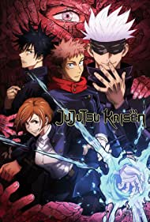

What is anime?
Anime is a style of animation that originated in Japan and has become popular worldwide, known for its diverse genres, colorful artwork, vibrant characters, and various storytelling approaches. It encompasses TV series, films, and other formats, catering to a wide range of audiences with themes ranging from action and fantasy to drama and romance, and has had a significant impact on global pop culture.
Jujitsu Kaisen

"Jujutsu Kaisen" oh man, where do I even start? This anime is an electrifying supernova of emotions and action that's impossible to tear your eyes away from. It's like they bottled up the essence of adrenaline and injected it straight into the storyline. From the moment we meet Yuji Itadori, a laid-back high schooler thrown into a world of curses and sorcery, you can't help but get emotionally invested. The battles are not just clashes of power, but of raw determination and sacrifices that hit you right in the feels. The characters, oh boy, they're not just ink and pixels, they're friends you want to root for, to protect, to see them grow stronger despite the odds. With jaw-dropping animation and a gut-punching soundtrack, "Jujutsu Kaisen" isn't just an anime—it's a pulse-pounding journey of heart, soul, and unbreakable bonds.
watch it on
crunchyroll
netflix
Death Note
"Death Note" a rollercoaster of moral dilemmas and psychological twists that grips your heart and mind from the very first note. When Light Yagami lays his hands on the Death Note—a notebook that grants the power to kill just by writing a name—he's plunged into a chilling dance of power, ethics, and consequences. The battle of wits between him and the enigmatic detective L is like a symphony of intellect and emotions, each move and countermove leaving you breathless. You're torn between hoping Light prevails and fearing the darkness consuming him. As the cat-and-mouse game unfolds, the anime delves into the shadows of justice, the fragility of humanity, and the haunting question of what you'd do with ultimate power. It's not just a story; it's an emotional labyrinth that challenges your beliefs and keeps you on the edge of your seat until the final, heart-wrenching note.
watch it on
crunchyroll
netflix